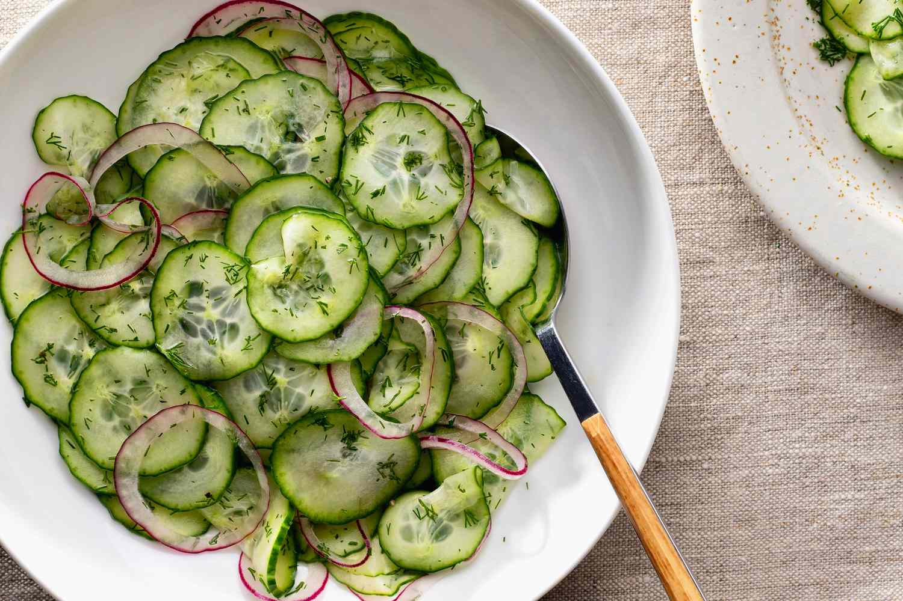
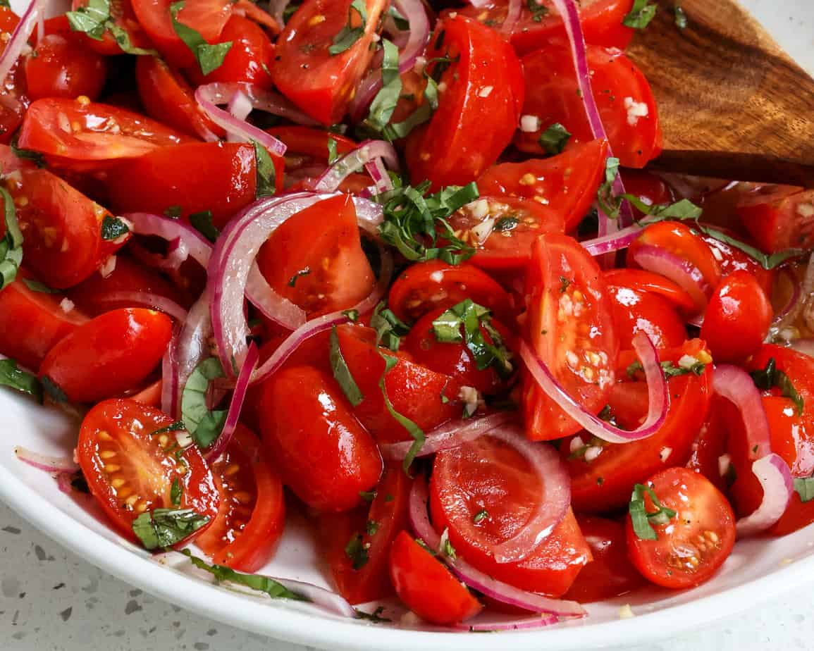

1. Green Salad Recipes
Green salads don't have to be boring, and these recipes are here to prove it!I often make these salad recipes for a healthy lunch, but they're great cookout and dinner side dishes too.salad recipes are my favorite way to showcase vibrant, in season produce fruits and veggies that taste so good

Ingredients
- Cucumber
- Avocado
- Garlic
- Carrot
- Salt
Directions
- Put all your mixed greens and spinach in a large bowl.
- Add in the cucumbers, carrots, bell pepper and tomatoes
- Toss all salad ingredients in a medium bowl.
2. German Cucumber Salad
Green salads don't have to be boring, and these recipes are here to prove it! German Cucumber Salad is a refreshing summer salad made with simple ingredients that are a staple in most kitchens! This recipe is easy to make, budget-friendly, and perfect for a potluck, family dinner, or summer cookout.
Ingredients
- Cucumbers
- Red onion
- White wine vinegar
- Honey
- Salt
Directions
- Peel the cucumbers if desired and thinly slice them with a mandoline slicer.
- Add salt and pepper to taste.
- Cover and let chill in the fridge for at least 4 hours or overnight.
3. Tomato Salad
The secret to my best tomato salad lies not in using costly nor an extensive list of ingredients, but in how it's constructed. Rather than shaking up a dressing, thick wedges of tomato are sprinkled with minced garlic, shallots and salt, drizzled with olive oil and vinegar
Ingredients
- Tomatoes
- Basil
- Garlic
- Eschallots
- Vinegar
Directions
- Cut the tomatoes into 8 or 10 wedges, cutting out the core. Place in a large bowl
- Add salt and pepper to taste.
- Sprinkle over eschallots, garlic, salt and pepper. Drizzle with olive oil and vinegar.